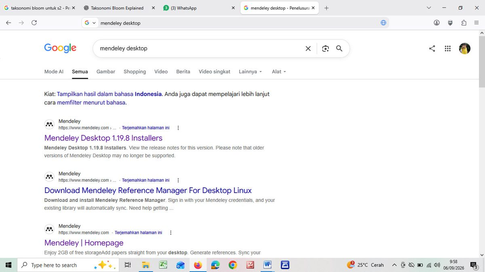
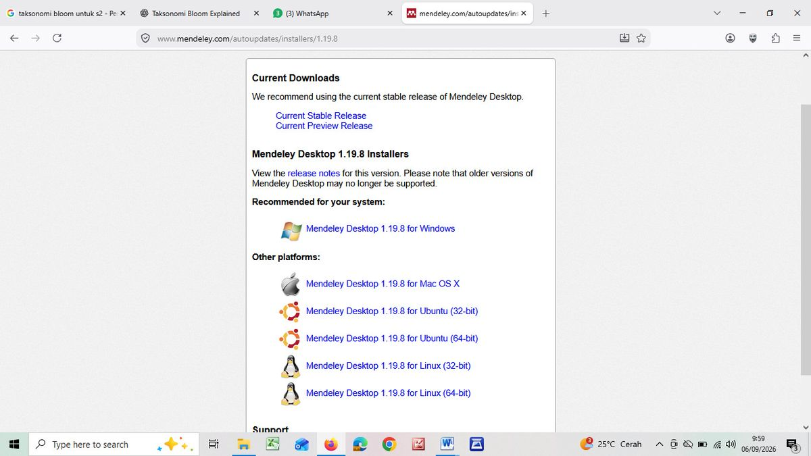
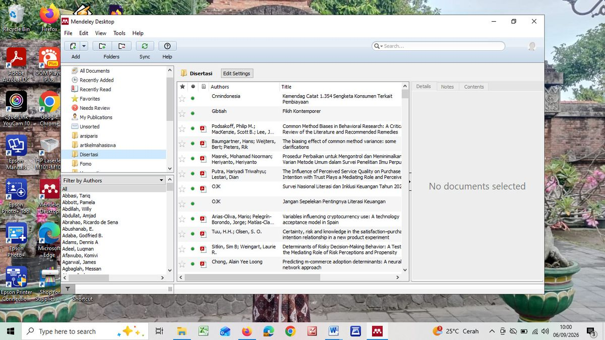
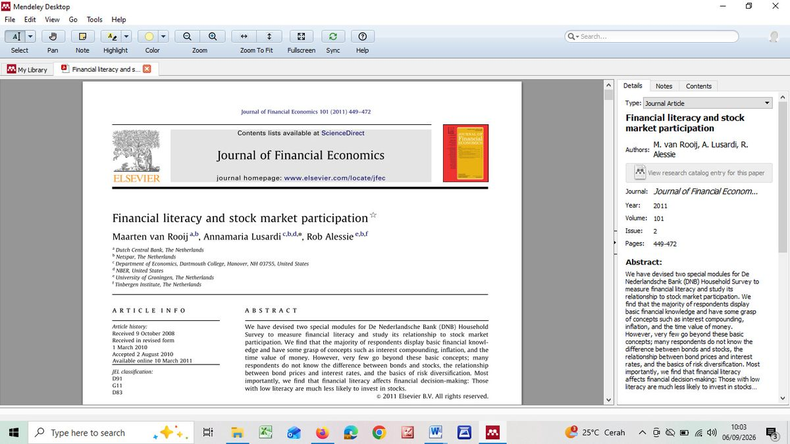
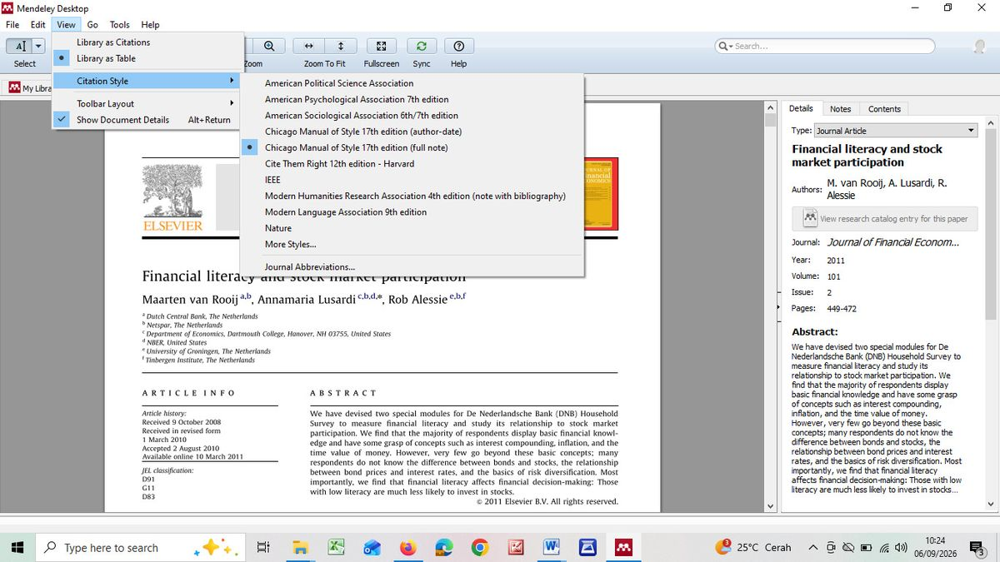

Modul 0 · Materi Kuliah
Panduan Manajemen Referensi dengan Mendeley
Dari memasang aplikasi sampai menyisipkan sitasi ke dalam naskah — langkah demi langkah, disertai dokumentasi praktik perkuliahan dan daftar kesalahan yang paling sering terjadi.
Mengapa Perlu Aplikasi Manajemen Referensi
Ketentuan penulisan artikel maupun ketentuan jurnal sama-sama mensyaratkan penggunaan Mendeley atau Zotero. Persyaratan ini bukan formalitas.
- Konsistensi. Artikel dengan 20–40 rujukan hampir mustahil dijaga konsistensi formatnya bila ditulis manual. Satu perubahan gaya sitasi berarti mengetik ulang seluruh daftar pustaka.
- Kecepatan. Menyisipkan sitasi cukup beberapa klik; daftar pustaka terbentuk otomatis dan tersusun menurut abjad.
- Ketertelusuran. Setiap catatan melekat pada sumbernya, sehingga risiko plagiasi tidak sengaja jauh berkurang.
- Penyimpanan terpusat. Seluruh PDF tersimpan dalam satu pustaka yang dapat dicari, ditandai, dan disinkronkan antarperangkat.
- Fleksibilitas gaya. Berpindah dari APA ke Chicago cukup dengan mengganti pilihan gaya, tanpa menyunting satu per satu.
Memperoleh dan Memasang Mendeley


- Cari “mendeley desktop” di mesin pencari, atau langsung menuju laman resmi Mendeley.
- Tersedia dua pilihan: Mendeley Reference Manager (versi terbaru, disarankan untuk pengguna baru) dan Mendeley Desktop versi lama (1.19.8) yang masih banyak dipakai karena kelengkapan fiturnya.
- Pilih pemasang yang sesuai dengan sistem operasi.
- Jalankan pemasang dan ikuti langkahnya sampai selesai.
- Buat akun Mendeley atau masuk dengan akun yang sudah ada — pustaka akan tersinkronkan otomatis, dengan penyimpanan gratis 2 GB.
- Pasang Mendeley Cite atau MS Word Plugin melalui menu Tools → Install MS Word Plugin agar Mendeley dapat dipanggil langsung dari Microsoft Word.
Membangun dan Menata Pustaka

Menambahkan referensi
- Seret dan lepas berkas PDF ke jendela Mendeley — metadata dibaca otomatis, meski perlu diperiksa ulang.
- Add → Add Files untuk menambahkan berkas dari komputer.
- Add Entry Manually untuk sumber yang tidak berbentuk berkas: buku cetak, wawancara, atau fatwa.
- Mendeley Web Importer — pengaya peramban untuk menyimpan langsung dari laman jurnal, Google Scholar, atau repositori.
Menata dengan folder
Panel kiri memungkinkan pembuatan folder sesuai kebutuhan. Untuk mata kuliah ini, disarankan membuat folder tersendiri — misalnya “Teori Ekonomi Mikro Islam” — dan subfolder untuk masing-masing tema tugas.

Langkah yang paling sering dilewatkan
Memeriksa metadata. Metadata yang dibaca otomatis sering keliru — nama penulis terbalik, tahun salah, nama jurnal tidak lengkap. Karena daftar pustaka dibangun dari metadata ini, kesalahan di sini langsung muncul di artikel. Periksa dan perbaiki melalui panel Details di sebelah kanan.
Fitur lain yang membantu: panel Filter by Authors di kiri bawah untuk menelusuri berdasarkan penulis; penanda bulat hijau untuk dokumen yang belum dibaca; serta fitur Notes dan Highlight yang memungkinkan pemberian catatan langsung pada PDF, sehingga membaca dan mencatat terjadi dalam satu tempat.
Mengatur Gaya Sitasi

Gaya sitasi diatur lewat menu View → Citation Style. Gaya bawaan yang tersedia antara lain American Political Science Association; American Psychological Association 7th edition (yang disyaratkan Jurnal ESA); American Sociological Association 6th/7th; Chicago Manual of Style 17th (author-date); Chicago Manual of Style 17th (full note); Cite Them Right 12th – Harvard; IEEE; MHRA 4th; MLA 9th; dan Nature. Bila jurnal tujuan memakai gaya lain, pilih More Styles… untuk mengunduh dari pustaka gaya Mendeley.
| Gaya | Bentuk sitasi | Digunakan untuk |
|---|---|---|
| APA 7th edition | Bodynote: (Chapra, 2000) | Artikel Jurnal ESA dan sebagian besar jurnal ekonomi |
| Chicago full note | Catatan kaki: M. Umer Chapra, The Future of Economics… (Leicester: The Islamic Foundation, 2000), 45. | Tesis, disertasi, dan makalah di banyak PTKIN |
Karena keduanya sama-sama diperlukan, biasakan memeriksa ketentuan lembaga atau jurnal tujuan sebelum mulai menulis, bukan setelah naskah selesai.
Menyisipkan Sitasi dalam Naskah
- Buka naskah di Microsoft Word. Pastikan tab References memuat kelompok perintah Mendeley (Insert Citation, Insert Bibliography, Style).
- Tempatkan kursor pada posisi sitasi, lalu klik Insert Citation.
- Ketik nama penulis, judul, atau tahun untuk mencari referensi dalam pustaka, lalu pilih.
- Untuk sitasi dengan nomor halaman, klik sitasi yang sudah tersisip lalu tambahkan halaman pada kolom yang tersedia.
- Setelah naskah selesai, tempatkan kursor di bagian daftar pustaka lalu klik Insert Bibliography. Daftar terbentuk otomatis dan tersusun menurut abjad.
- Setiap penambahan atau perubahan sitasi akan memperbarui daftar pustaka secara otomatis.
Saran praktis sebelum mengirim naskah
Buat salinan berkas lalu ubah sitasi menjadi teks biasa. Ini mencegah kekacauan format ketika berkas dibuka di komputer yang tidak memasang Mendeley. Simpan versi asli yang masih bertaut dengan Mendeley untuk keperluan revisi.
Kesalahan Umum dan Cara Mengatasinya
| Kesalahan | Penyebab | Cara mengatasi |
|---|---|---|
| Nama penulis terbalik atau tidak lengkap | Metadata otomatis salah baca | Perbaiki manual di panel Details |
| Judul berhuruf kapital semua | Metadata dari sumber tertentu | Sunting judul di panel Details |
| Daftar pustaka tidak muncul | Plugin Word belum terpasang | Tools → Install MS Word Plugin |
| Sitasi berubah jadi kode aneh | Berkas dibuka di komputer tanpa Mendeley | Gunakan salinan yang sudah diubah menjadi teks biasa |
| Referensi ganda | Satu sumber dimasukkan lebih dari sekali | Tools → Check for Duplicates |
| Sumber non-Inggris salah format | Gaya bawaan mengasumsikan sumber berbahasa Inggris | Periksa dan sesuaikan manual pada hasil akhir |